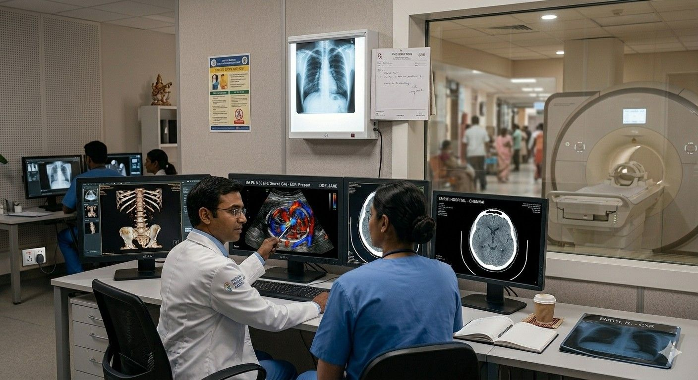
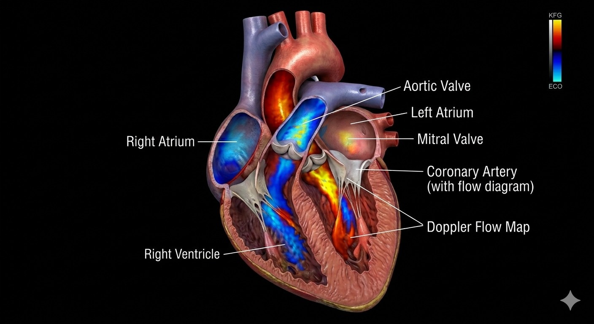
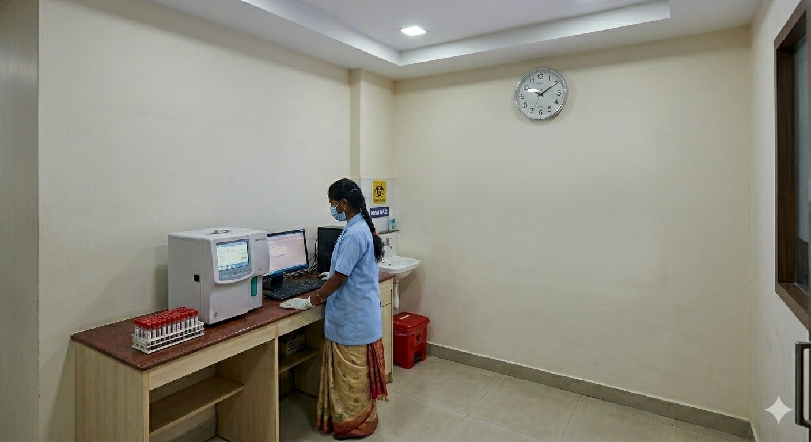

Departments
From pregnancy scans and fetal medicine to cardiology diagnostics and clinical laboratory — explore our full range of specialist diagnostic services.

Radiology & Imaging
Advanced diagnostic imaging using high-resolution ultrasound technology — delivering clear, accurate results for comprehensive patient assessment.
Ultrasound Imaging
High-resolution ultrasound scans providing clear, detailed diagnostic views for accurate assessment.
3D / 4D Scanning
eal-time imaging for detailed structural assessment and early anomaly detection.
Colour Doppler
Advanced colour Doppler technology to visualise blood flow with precision.
Fetal Medicine
Specialist fetal medicine services including growth monitoring, anomaly detection, and genetic counselling.
Fetal Medicine
Specialist fetal medicine services combining advanced imaging and expert care — monitoring your baby's health at every critical stage of pregnancy.
NT Scan
Early first-trimester screening to assess chromosomal risk and nuchal translucency.
Anomaly / TIFFA Scan
Detailed mid-pregnancy scan examining baby's organs and structure.
Fetal Growth Monitoring
Regular scans to track baby's growth, weight, and development.
Fetal Echocardiography
Detailed imaging of the fetal heart structure and blood flow for early cardiac assessment.

Cardiology (Diagnostic)
Comprehensive cardiac diagnostic services combining advanced imaging and expert care — for accurate heart health assessment and management.
Cardiac Consultation
Expert consultation for diagnosis, treatment planning, and heart health management.
Echocardiography
Detailed imaging of heart structure, valves, and chambers for accurate diagnosis.
CECG & Holter Monitoring
Continuous heart rhythm monitoring to detect arrhythmias and irregularities.
Cardiac Stress Test
Evaluates heart performance under stress to identify circulation issues.

Clinical Laboratory
Accurate, reliable laboratory diagnostic services using advanced testing technology — delivering fast, precise results for better healthcare decisions.
Blood Analysis
Comprehensive blood testing including CBC, blood sugar, and hormone levels.
Urine & Culture Tests
Detailed urine examination and culture testing to detect infections.
Prenatal Screening
Specialised tests during pregnancy to screen for chromosomal conditions.
Rapid Result Reporting
Fast, accurate test results processed with strict quality standards.